Ce qui a été ajouté
14 nouvelles pages complètent la première révision : 161 vues métier/page supplémentaires, soit 855 vues au total pour 15 métiers. 374 vues sont interactives ; 481 captures initiales restent disponibles. Ce rapport présente 25 captures actuelles, dont les 14 nouvelles pages.
Ce qui est partagé
La même interface conserve les feedbacks séparés Eugénie / Rachid et plusieurs images par écran. Ils sont enregistrés sur le VPS. Les essais de formulaires, critères et validations restent locaux à votre navigateur : le comparateur est un outil de revue, pas encore le dossier opérationnel synchronisé de toute une équipe.
Les références prises en compte
Mail « UX DAHSBOARD PROCESS BEEYOND » du 15 octobre 2026, screens Creative/Bloom, métriques, Bee Certified, trois piliers, casting, authentification, écosystème et dossier EUGE DA. Les deux écrans récents Creative Hive / Sound Tale corrigent l’ancienne structure de présentation.
Ce qui est harmonisé
Compositions sources, carrousels, icônes, menus, cartes, anneaux et bandeaux de pièces sont intégrés au langage Horizon. Les écrans anglais sont expliqués en français. Les chiffres décoratifs des références deviennent des données d’exercice reliées à leur périmètre.
LA CHAÎNE COMMUNE
Brief → création → scouting → production → Honey
Creative Hive : casting, beauty, stylisme, photo, film, décor, son et sources.
Bloom Hive : repérages, équipe, fournisseurs, transport, séjour, restauration, ressources et déchets.
Chaque contribution → activité / objet → coût et mesure → pièce → revue → pilier → présentation marque.
Bee Label : Social / Environnemental / Économique. Honey : retours Créatif / Opérationnel / Impact. Les résultats ONG gardent leur registre distinct.
1. Partir du Creative Studio
Ouvrir Creative Hive, puis Casting. Choisir un pays et un mode interne / partenaire ; ouvrir la fiche talent et suivre les liens look, beauty et scouting.
2. Relier le son au récit
Ouvrir Sound library, changer de chapitre, renseigner le brief et la source ; retrouver le même chapitre dans le studio, la carte et le Bloomboard.
3. Suivre un chiffre
Cliquer un indicateur, modifier quantité et total, puis ajouter une référence. La documentation remonte dans Creative ou Bloom et dans Bee Certified ; le pilier retrouve la même mesure.
4. Tester la revue
En rôle Bee ou expert, revoir un critère. Un risque élevé exige la revue indépendante. Modifier une quantité ou sa preuve remet la revue en attente. Aucun certificat n’est émis.
5. Préparer la marque
Parcourir les huit étapes Tales, puis la valeur. Ouvrir les retours Honey et le label, exporter la présentation et commenter les écrans avec le lien personnel habituel.
Utilisez votre lien personnel habituel pour commenter comme Eugénie ou Rachid. Changer le métier affiché ne change pas l’auteur du feedback. Les textes et images de feedback sont partagés ; les essais de formulaires restent locaux.
Les captures proviennent de l’interface rendue. Ouvrez une capture pour la voir intégralement ; chaque bouton de test conduit au même écran et à ses feedbacks.
01 / bee
Creative Hive : les contributions deviennent mesurables
Les cartes de pôles, la jauge, l’historique et la répartition par pilier reprennent le dashboard source. Les 18 critères créatifs conduisent au même registre : casting, designers, beauty, sources visuelles, décor et son.
À manipuler
Filtres par métier, cartes horizontales, jauge de complétude, instantanés datés, indicateurs cliquables et liens vers leurs preuves.
Tester et donner un feedbackCapture intégrale · Référence Drive
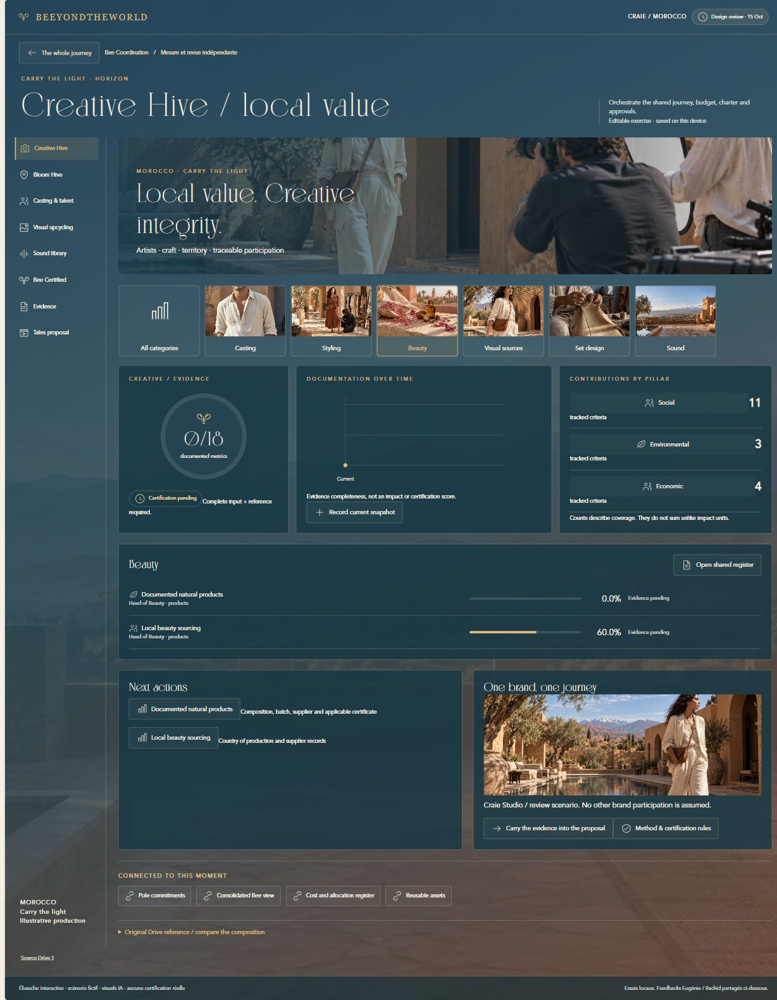
02 / bee
Bloom Hive : relier le terrain aux preuves
19 critères suivent équipe, repérages, fournisseurs, transport, séjour, catering, matériel, ressources et déchets. Les données absentes restent absentes ; les montants viennent du registre des acteurs.
À manipuler
Filtres de catégories, graphe de documentation, liens aux fiches terrain, au coût et au pilier concerné.
Tester et donner un feedbackCapture intégrale · Référence Drive
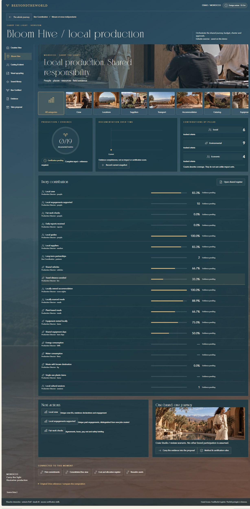
03 / bee
Deux pôles, une vue Bee Label
Creative Hive et Bloom Hive rejoignent la consolidation Bee Certified. Trois entrées distinctes : social, environnemental et économique. La jauge indique les critères documentés, jamais une note de durabilité inventée.
À manipuler
Deux anneaux de complétude, trois cartes de piliers, données partagées, accès au référentiel et aux preuves.
Tester et donner un feedbackCapture intégrale · Référence Drive
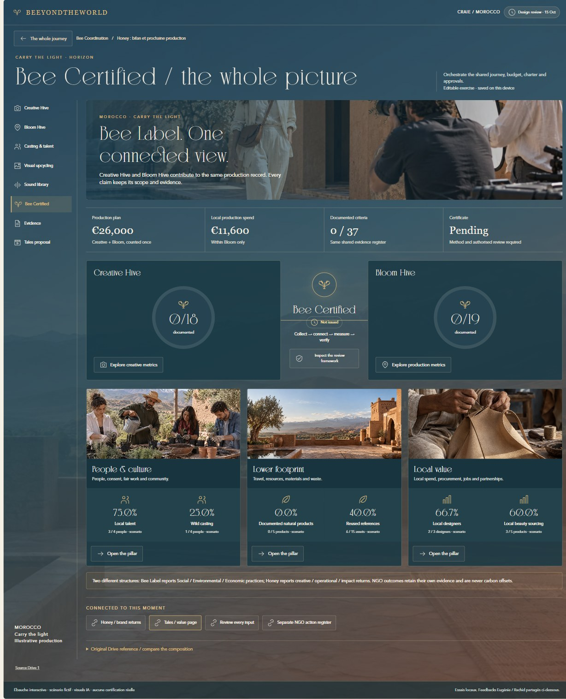
04 / bee
Le pilier social retrouve son dashboard
Équipe, talents, fournisseurs, communauté, conditions de travail et inclusion ont leurs indicateurs et leurs pièces. Une participation locale, un contrat et un consentement restent trois informations distinctes.
À manipuler
Six indicateurs, onglets de sous-thèmes, visuel de contexte, lignes cliquables vers le registre.
Tester et donner un feedbackCapture intégrale · Référence Drive
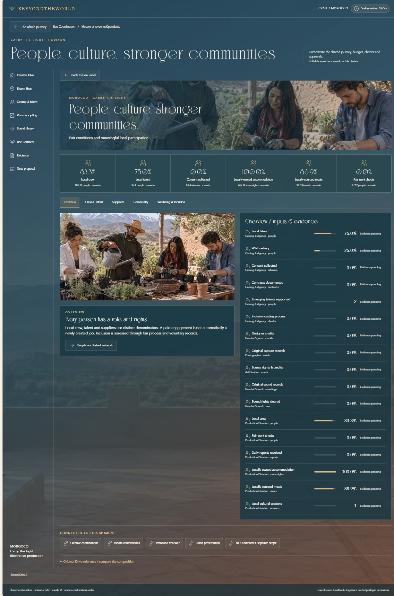
05 / bee
Le pilier environnemental garde ses unités
Transport, équipement, énergie, eau, hébergement, restauration et déchets sont séparés. Une provenance locale ne prouve pas à elle seule une réduction carbone. Les facteurs, le périmètre et la comparaison restent accessibles.
À manipuler
Six indicateurs, onglets, suivi matière et ressources, accès au calcul carbone et à ses conditions de validité.
Tester et donner un feedbackCapture intégrale · Référence Drive
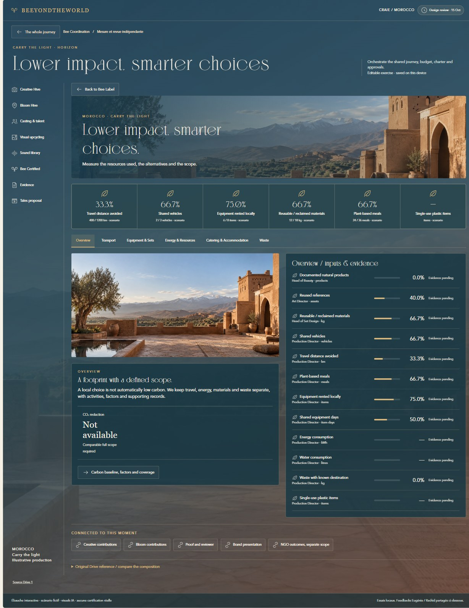
06 / bee
Le pilier économique suit la valeur locale
Fournisseurs, engagements, artistes, designers et partenariats se rattachent aux dépenses. L’investissement local est une part de la production, sans additionner deux fois les sous-allocations.
À manipuler
Six indicateurs, onglets dépenses/fournisseurs/emploi/valeur, registre budgétaire relié et preuves d’origine.
Tester et donner un feedbackCapture intégrale · Référence Drive
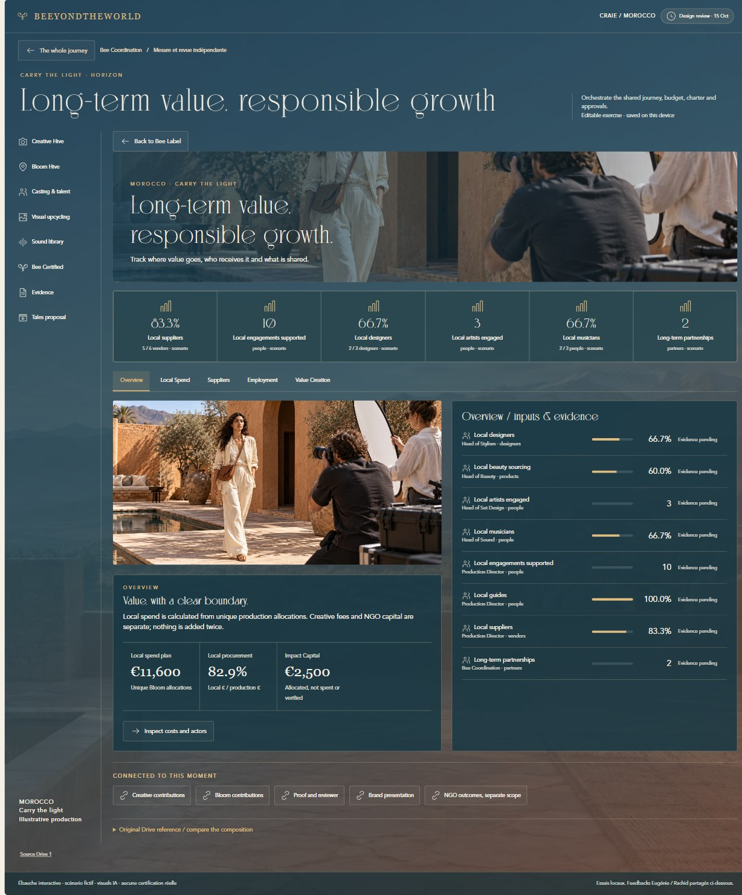
07 / agency
Un vrai espace Agence / Casting
Les six cartes de la référence sont reprises : agences locales, wild casting, inclusion, participation locale, consentements et talents émergents. Le réseau peut être interne, partenaire ou hybride et se consulte par pays.
À manipuler
Carrousel de cartes, pays sélectionnables, mode de fonctionnement, canaux de découverte, métriques et bandeau de pièces.
Tester et donner un feedbackCapture intégrale · Référence Drive
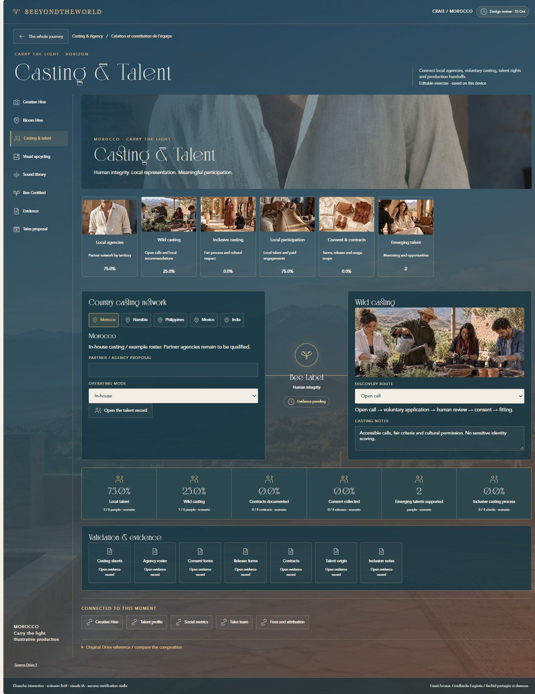
08 / agency
La fiche talent relie les métiers
La représentation, le pays, le canal de découverte, le look, le chapitre, le fitting et les conditions d’usage se rencontrent dans une fiche. Liens vers stylisme, beauté, scouting et allocation. Le profil est fictif.
À manipuler
Formulaire, sélection de look/chapitre, checklist de consentement et conditions, note de relais et liens vers les responsables.
Tester et donner un feedbackCapture intégrale · Référence Drive
09 / art
L’inspiration conserve sa provenance
Six familles de sources, une référence parent, un auteur, des droits et un dérivé relient inspiration et livraison. Le Bee Authenticator complète cette chaîne. Une illustration IA n’est jamais assimilée à une capture organique.
À manipuler
Canaux sélectionnables, fiche source, parent/dérivé, crédits, checklist et accès au passeport et aux métriques.
Tester et donner un feedbackCapture intégrale · Référence Drive
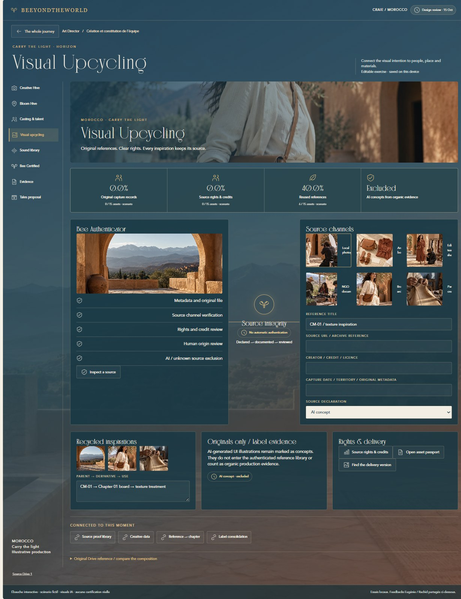
10 / bee
Une seule mesure, plusieurs lectures
37 identifiants relient métier, quantité, dénominateur, unité, périmètre, preuve, revue et pilier. Modifier une donnée rouvre la revue. Un risque élevé demande une revue indépendante dans l’exercice.
À manipuler
Filtre de pôle, liste d’indicateurs, calcul à la saisie, contrôles de validité, décisions Bee/expert et export du registre.
Tester et donner un feedbackCapture intégrale · Référence Drive
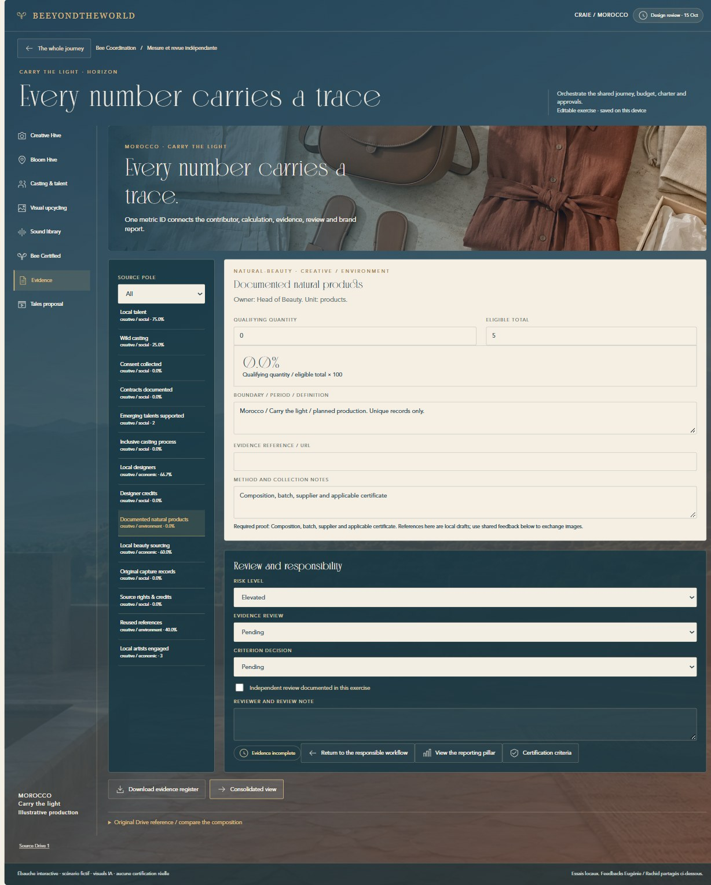
11 / sound
Sound Tale devient une partie du récit
Le dernier écran EUGE DA donne au son une place égale au Visual Tale. Chaque chapitre relie composition, brief DA, bibliothèque mondiale, voix, instruments, nature, ambiances, artiste, géolocalisation et droits.
À manipuler
Chapitrage commun, types de sons, fiches source et composition, coordonnées, droits, accès au lecteur, budget et Bloomboard.
Tester et donner un feedbackCapture intégrale · Référence Drive
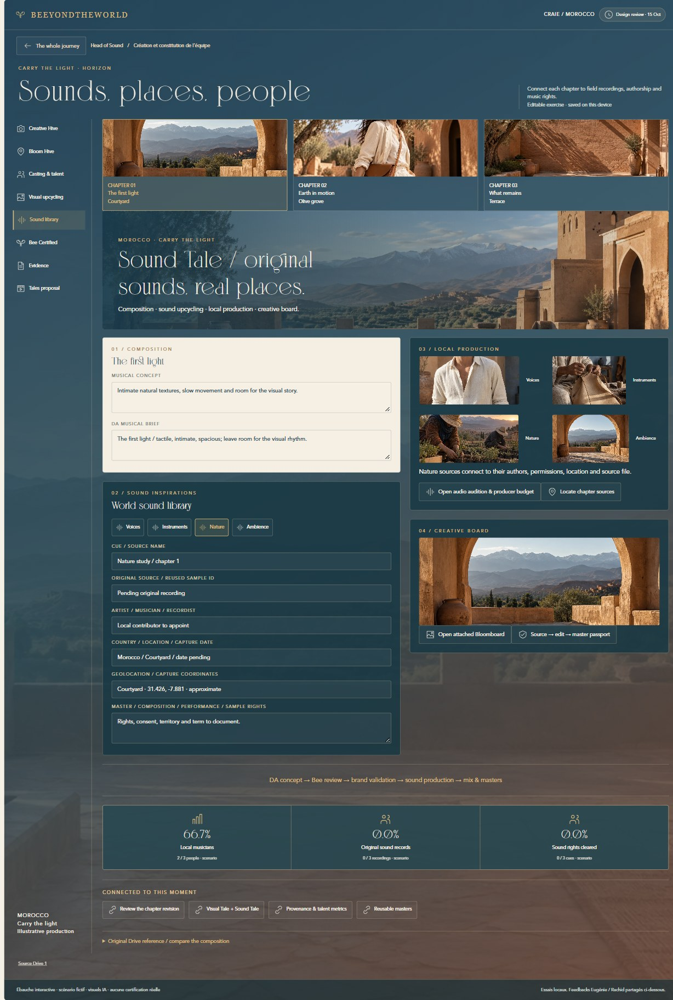
13 / art
Ce que la production laisse à la marque
Sons, matériaux, archives visuelles, passeports et masters composent la bibliothèque de réemploi. Chaque livraison conserve version, licence, crédit et sources. Elixir of Honey, le magazine, reste bien pour plus tard.
À manipuler
Cartes de familles, fiche livraison et droits, liens postproduction, Bee Label, retours Honey et présentation Tales.
Tester et donner un feedbackCapture intégrale · Référence Drive
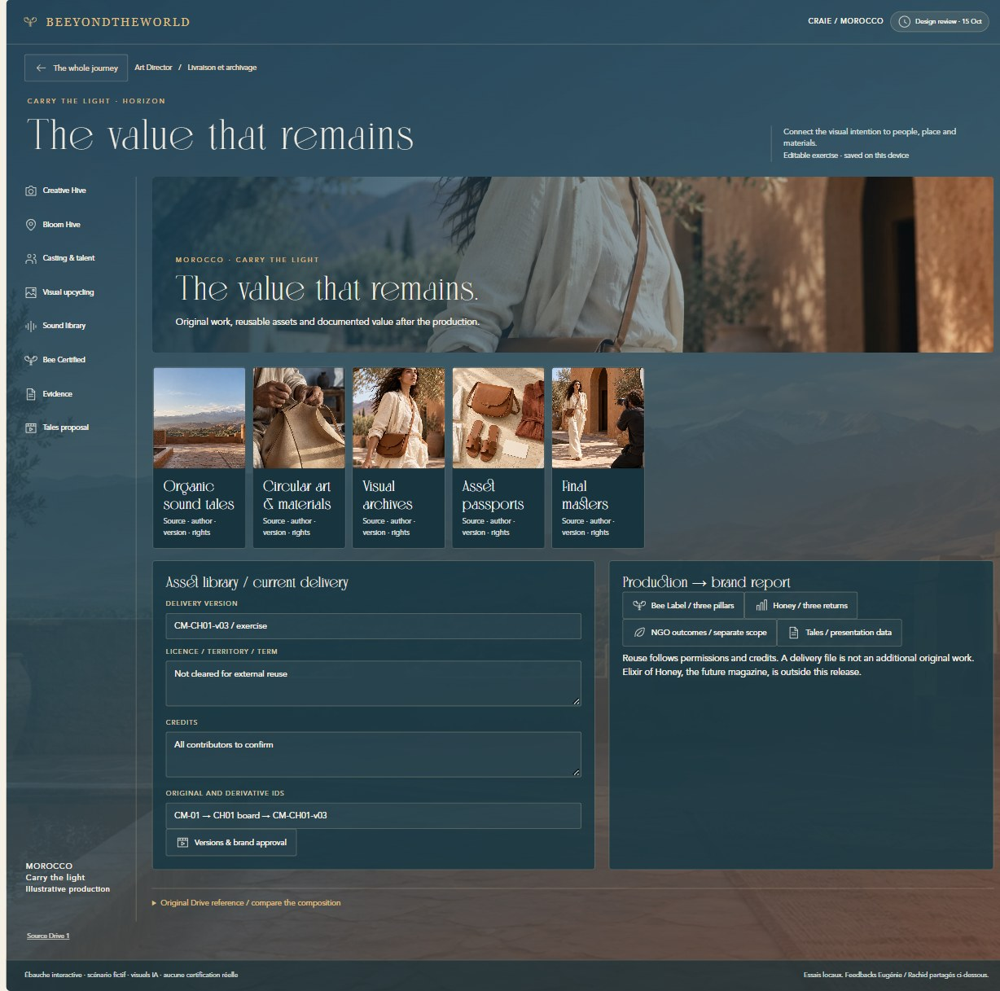
14 / bee
Un référentiel explicite avant un certificat
Version de charte, propriétaire, périmètre, règles, validité et indépendance sont visibles. Les screens ne définissent pas de barème complet : aucun poids, seuil ni certificat réel n’a été fabriqué.
À manipuler
Formulaire de référentiel, décision de revue réservée à Bee/expert, export d’un dossier de revue marqué brouillon.
Tester et donner un feedbackCapture intégrale · Référence Drive
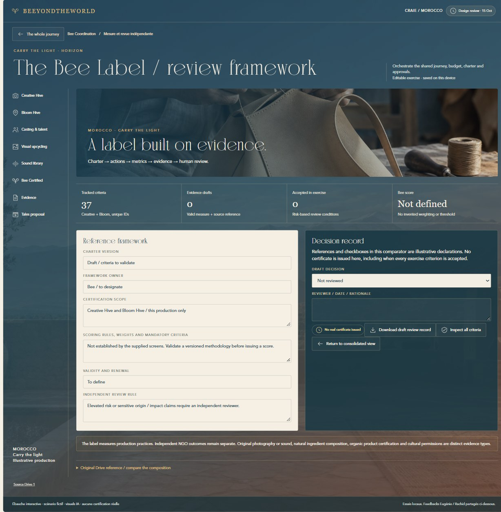
18 / art
EUGE DA : Visual Tale et Sound Tale côte à côte
La version récente du Drive remplace l’ancienne logique d’options par deux univers forts. L’équipe créative, les métiers locaux, le casting et les inspirations restent rattachés à la proposition marque.
À manipuler
Deux cartes visuelles principales, raccourcis spécialités, équipe et source, assistant Tales en huit étapes.
Tester et donner un feedbackCapture intégrale · Référence Drive
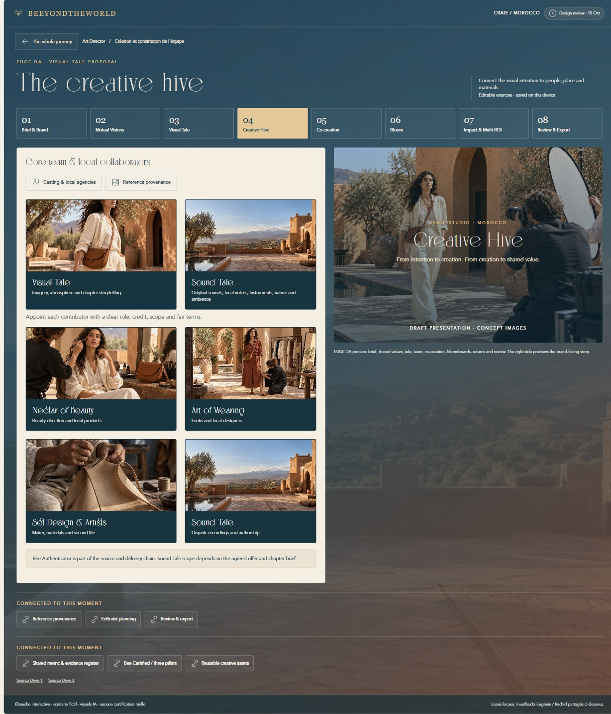
21 / beauty
Beauty : pays, ingrédients et preuve
Huiles, pigments, textures, fournisseur, région, lot et certificat restent documentés. La page est maintenant connectée aux critères produits naturels et sourcing local ; changer de pays retire le fournisseur d’exemple non pertinent.
À manipuler
Sélecteur de pays et matières, formulaire de provenance, liens métriques et preuves. Aucun partenariat réel annoncé.
Tester et donner un feedbackCapture intégrale
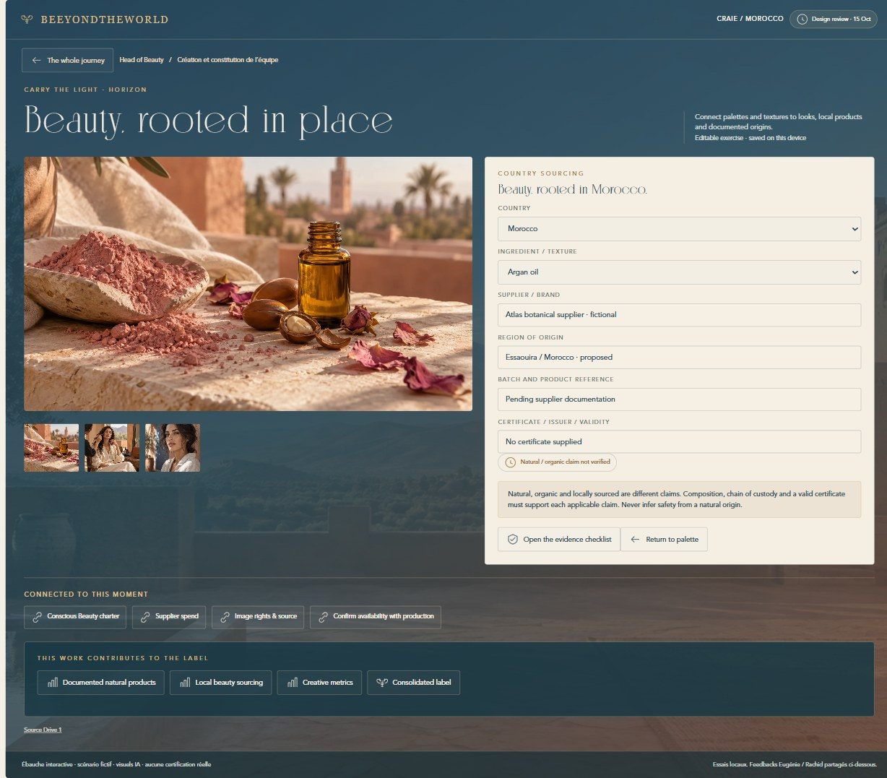
24 / bee
Scouting : le passage Bee / Flower reste central
La DA partage récit et frames. La production vérifie accès, lumière, timing, disponibilité et coût. Beauty, stylisme, décor et son préparent le même chapitre avant la revue Bee, puis marque.
À manipuler
Frames, lieux, checklist de faisabilité, retour de production et accès au verrouillage créatif.
Tester et donner un feedbackCapture intégrale
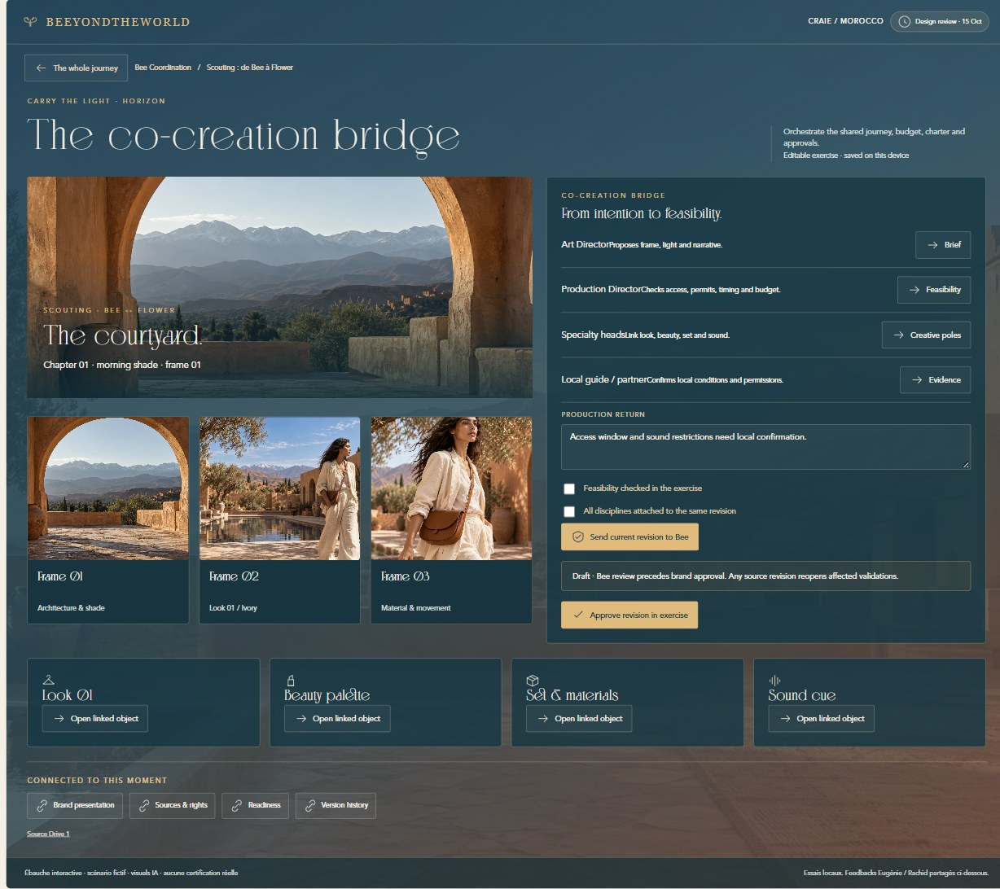
Référentiel de certification
Définir et approuver critères obligatoires, poids éventuels, seuils, propriétaire, durée de validité et renouvellement. Le comparateur expose ces champs sans décider à votre place.
Qualification des partenaires
Renseigner les agences, designers, artisans, fournisseurs beauty, musiciens et lieux réels par pays, leurs disponibilités, tarifs et permissions. Les propositions du cas restent illustratives.
Données de la prochaine production
Importer originaux et droits, contrats, factures, activités terrain et preuves. Une origine naturelle, une certification de produit et une autorisation culturelle demandent des pièces différentes.
Périmètre opérationnel suivant
Après validation de l’ébauche : dossiers partagés par production, stockage des sources métier, invitations, permissions effectives et décisions auditables. Elixir of Honey reste hors périmètre, conformément au mail.